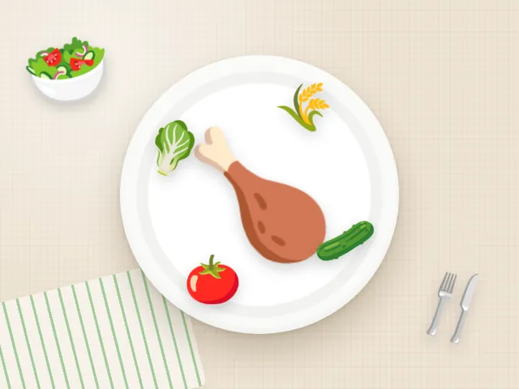

Гречка с курицей и салатом
Ккал
488
Белки
48 г
Жиры
15 г
Углеводы
39 г
Состав на порцию
- Гречка отварная — 150 г
- Куриная грудка запечённая — 130 г
- Салат из свежих овощей — 150 г
- Оливковое масло — 8 г
- Паприка, чеснок, соль
Как приготовить
- Отварите 60 г гречки в подсоленной воде 15 минут.
- Натрите филе паприкой и чесноком, запекайте 20 минут при 200 °C.
- Нарежьте овощи и заправьте маслом.
Калорийность и БЖУ посчитаны по составу на одну порцию. Хотите вписать гречка с курицей и салатом в свой рацион? Посчитайте норму в калькуляторе калорий.